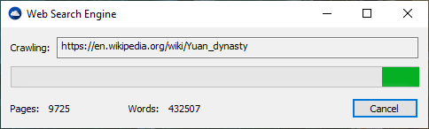

Design and implementation of a Web Search Engine using Text Mining techniques.
WebSearchEngine is a free (as in “free speech” and also as in “free beer”) web crawler, indexer and search engine built around text-mining ideas. Running in the Microsoft Windows environment, its use is governed by GNU General Public License v3.0. A C++/MFC desktop application crawls web pages, extracts their title and plain text, and stores the words they contain in a MySQL/MariaDB database through ODBC. Stored SQL functions weigh every word of every page with a TF-IDF style score, and a small PHP page answers search queries by ranking the indexed pages with these scores. A Python version of the crawler is included as well. This is a learning and demonstration project rather than a production search engine, so please read Known limitations before you point it at the web. The accompanying article is on CodeProject.
https://en.wikipedia.org/ and keeps a frontier of the URLs it still has to visit. Whenever a link is found again its score grows by one, and the next page to download is the queued URL with the highest score (the one queued first wins a tie). Pages are downloaded to a temporary file with URLDownloadToFile.<title> element, and the links found in <a href="…"> elements are resolved against the address of the page, stripped of their #fragment and added to the frontier. The HTML is converted to plain text: tags and comments are removed, elements that are not displayed (title, script, style, noscript, template, object, svg, …) are removed together with their content, and the rest is kept, with a line break wherever a block element starts and without splitting a word at inline tags such as <b>. The character references that remain in the text, such as &, é and €, are then decoded as a browser does (every named reference of the HTML Living Standard is known), and the no-break space and the other Unicode spaces become ordinary spaces.keyword table, and the occurrence table counts how many times it appears on each page.data_mining SQL function, the relevance scores of the words it has met since the previous round (see Relevance scoring).search.php splits the query into words, keeps the pages that contain all of them, ranks these pages by the average score of the query words and shows the best 100, each with its title, score, address and the beginning of its text.| Component | Files | Role |
|---|---|---|
| C++/MFC crawler | WebSearchEngine.cpp, WebSearchEngineDlg.cpp, WebSearchEngineExt.cpp, ConnectionSettingsDlg.cpp |
Application and main dialog with the crawling thread, crawler engine (frontier, download, parsing, indexing), database connection settings |
| HTML processing | HtmlToText.cpp, UnquoteHTML.cpp, HtmlEntities.h |
HTML to plain text conversion and decoding of the HTML character references, with the table of the names generated from the HTML Living Standard by GenerateHtmlEntities.py |
| Text encoding | Utf8.cpp |
Conversion between UTF-8 and the UTF-16 strings of Windows and of the database (utf8_to_wstring, wstring_to_utf8), written with the C++20/23 library because <codecvt> is deprecated and C++26 removes it |
| Third-party classes | ODBCWrappers.h, HLinkCtrl.cpp, VersionInfo.cpp |
PJ Naughter's ODBC wrappers, hyperlink control and version information classes |
| Database | search.sql |
Stored functions no_of_words, no_of_pages, total_pages and data_mining |
| Web front-end | index.html, search.php |
Search form and results page |
| Python crawler | WebSearchEngine.py |
Stand-alone alternative to the C++ crawler |
| Documentation | README.md, WebSearchEngine.html, ReleaseNotes.html, SoftwareContentRegister.html |
Overview, help page, release history, third-party software |
v145 platform toolset), the Desktop development with C++ workload and the MFC component. To build with another Visual Studio version, retarget the project to a toolset you have installed.MySQL ODBC 8.0 Unicode Driver. Install the same bitness (x64 or x86) as the build you are going to run.search.sql uses CREATE OR REPLACE FUNCTION. MySQL does not support that statement; to use MySQL, replace each one with DROP FUNCTION IF EXISTS … followed by CREATE FUNCTION ….mysqli extension, for the search page.mysql-connector-python, beautifulsoup4 and gensim, only if you prefer the Python crawler.Create an empty database and an account for the crawler, for example:
CREATE DATABASE TextMining;
CREATE USER 'crawler'@'localhost' IDENTIFIED BY '<a-strong-password>';
GRANT ALL PRIVILEGES ON TextMining.* TO 'crawler'@'localhost';Then load the stored functions of search.sql into it. The first statement of that file (CREATE UNIQUE INDEX …) is run by the crawler itself once the tables exist, so skip it, or let it fail harmlessly with the --force option of the command-line client (run it from cmd.exe or a Unix shell, because PowerShell does not support <):
mysql --force -u crawler -p TextMining < search.sqlSHOW FUNCTION STATUS WHERE Db = 'TextMining'; must list no_of_words, no_of_pages, total_pages and data_mining. The C++ crawler calls them for the first time when it stores its 1,000th page and stops with the error “Cannot apply data mining to the database” if they are missing.
Open WebSearchEngine.sln in Visual Studio, or build from a Developer Command Prompt:
msbuild WebSearchEngine.vcxproj /p:Configuration=Release /p:Platform=x64Debug and Release are available for both x64 and Win32, and the executable is written to x64\Release (or Release for Win32). The repository does not contain compiled binaries, so you build the application yourself.
Run WebSearchEngine.exe. It first shows the Database Connection Settings dialog (Server, Port, Database, Username and Password; the defaults are localhost, 3306, TextMining and root). The settings are remembered for the current Windows user under HKEY_CURRENT_USER\Software\Stefan-Mihai MOGA, and the password is saved there as plain text.
occurrence, keyword and webpage tables, so the index of any previous run is lost. Use a database that holds nothing else you care about.
Then it creates the tables, together with a unique index on keyword(name), and starts crawling in a background thread. The dialog shows the address being crawled and the number of Pages and Words stored so far. The crawl ends when there are no URLs left to visit, or when you press Cancel.
Copy index.html and search.php to a web server with PHP and the mysqli extension, and edit search.php so that $servername, $username, $password and $dbname point to your own database. The page only reads data, so give it an account that has just the SELECT privilege, and keep these credentials out of version control. Then open index.html, type a query and search.
WebSearchEngine.py does the same job without Visual Studio, ODBC or search.sql: when it starts, it drops and re-creates the tables, adds a frontier table and creates the four stored functions itself.
pip install mysql-connector-python beautifulsoup4 gensimSet HOSTNAME, DATABASE, USERNAME and PASSWORD at the top of the script (and keep your real values out of version control), then run python WebSearchEngine.py. Compared with the C++ crawler:
frontier table, and the crawl ends when no unvisited URL is left;| Table | Columns | Purpose |
|---|---|---|
webpage |
webpage_id, url, title, content |
One row per crawled page (the C++ crawler keeps at most 65,535 characters of text) |
keyword |
keyword_id, name |
One row per distinct word, with a unique index on name |
occurrence |
webpage_id, keyword_id, counter, pagerank |
How many times a word appears on a page (counter) and the relevance score of that word on that page (pagerank) |
frontier |
url_id, address, visited, score |
Python crawler only: the URLs waiting to be crawled (the C++ crawler keeps its frontier in memory) |
For every word of every page, the data_mining function of search.sql computes:
score(page, word) = counter(page, word) / no_of_words(word)
* LOG((1 + total_pages()) / no_of_pages(word))counter is the number of times the word appears on the page, no_of_words is the highest counter of that word on any page, total_pages is the number of indexed pages and no_of_pages is the number of pages that contain the word. The first factor is the term frequency and the second one the inverse document frequency (LOG is the natural logarithm), so a word that is frequent on a page but rare in the index weighs the most. The score is stored in occurrence.pagerank; despite its name, it has nothing to do with the link-based PageRank algorithm. A search ranks the pages by the average score of the query words.
Scores are computed in batches: every 1,000 stored pages, the C++ crawler refreshes the scores of the words it has met since the previous batch, and the Python crawler refreshes all of them. They are therefore approximate while a crawl is running, and the pages stored after the last batch keep the score 0, because nothing is recomputed when the crawl ends.
robots.txt, no politeness: neither crawler reads robots.txt or pauses between requests, and both start from https://en.wikipedia.org/. Only crawl sites you are allowed to crawl, at a rate their owners accept.<title>…</title> element, only the links written exactly as <a href="…"> are followed, and the content type is not checked.USE_CRYPTO_METHODS, is switched off), and search.php and WebSearchEngine.py keep the database credentials in the source. search.php is a demonstration: it builds its SQL statement from the query text and prints titles, addresses and page text without escaping them, and the Python crawler formats its SQL statements as strings. Review and harden them before you expose them to untrusted users, never commit real credentials, and report vulnerabilities as described in SECURITY.md.This roadmap outlines where WebSearchEngine is heading. Today it is a crawler, an indexer and a small search page that show how text mining can rank web pages, and the roadmap builds on that: it brings together the next steps for the features that are already there, ideas for new ones, and the maintenance work that goes into every update. Items are grouped by horizon rather than by date, and their order may change as feedback arrives, so please treat it as a statement of intent, not a promise. For everything that has already shipped, see the Release Notes.
Last reviewed: November 2026.
ODBCWrappers, CHLinkCtrl and CVersionInfo classes (the most recent update, of ODBCWrappers, was in March 2026) and the latest Visual Studio toolset.robots.txt: read and obey the robots.txt file of every site (including Crawl-delay) and wait between two requests to the same site. Neither crawler does this today.https://en.wikipedia.org/.search.php, credentials kept outside the script, paging beyond the first 100 results, and a snippet around the matching words instead of the first 1,024 characters of the page.pagerank column is a TF-IDF score today, not a link-analysis one.OR/NOT operators (a query needs all its words today), possibly backed by MariaDB full-text indexes.search.sql (the same SQL is duplicated in three places today), including a variant of the functions that MySQL accepts.Want to see something sooner, or have an idea that is not listed here? Open an issue or start a conversation in Discussions. Contributions are welcome as well: any item above can be picked up through a pull request, as described in the next section.
The first step is to create an issue on GitHub that describes the bug to fix or the improvement to make; in your issue, be sure to explain that you are going to submit a pull request. The second step is to fork the repository, commit your changes to your fork and use the GitHub interface to create the pull request from your fork into the main repository. The final step is to wait for and respond to feedback from the developers as needed, until such time as your pull request is accepted or rejected. Please follow the Code of Conduct, and report any security vulnerability privately, as described in SECURITY.md, instead of opening a public issue.
index.html, search.php and the HTML documentation pages.Visit text-mining.ro for a live demonstration.
This project is licensed under the GNU General Public License v3.0 - see the LICENSE file for details.